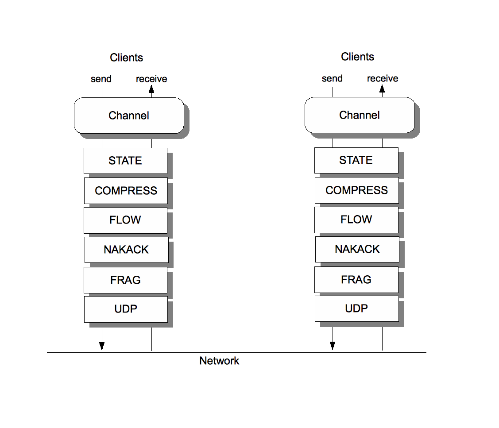
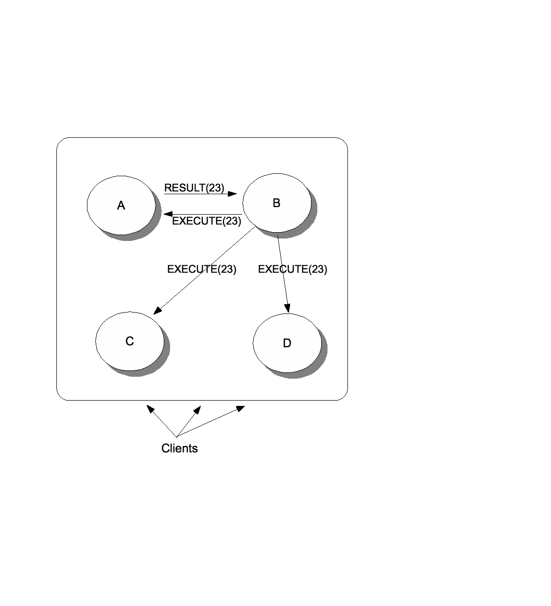

Bela Ban
Sept 2008
This article will introduce the basic concepts of JGroups ([1]) and then implement a task distribution system (on top of JGroups), where tasks can be placed into the cluster and are executed by worker nodes.
I'll show that worker nodes can be added at run time to add more processing power, or taken down when we don't have much load. Plus, tasks assigned to workers who subsequently crash are automatically reassigned to live nodes.
We could have implemented this with JMS queues. However, when we have a lot of load, the JMS server tends to become the bottleneck. In our decentralized solution, every node in the cluster can be both a master (who submits tasks) and a slave (who executes the tasks and returns the results).
JGroups is a clustering library. Applications can use JGroups to join a cluster, send messages to the cluster nodes, get notifications when other nodes join or leave (including crashes), and leave a cluster.
Its task is the reliable sending of messages within a cluster. Its scope is much smaller than JMS; JGroups doesn't know about queues, topics and transactions, but only about message sending.
The main feature of JGroups is the protocol stack and the resulting configuration flexibility. Applications can pick the properties they would like in a cluster by simply editing an XML file.
For example, an application can add compression by simply adding the COMPRESS protocol to the configuration.
Or it can remove fragmentation because its messages will always be smaller than 65K (over UDP), or because it uses TCP as transport.
Another application might add encryption and authentication, so messages are encrypted and only nodes which present a valid X.509 certificate can join the cluster.
Applications are even free to write their own protocols (or extend an existing one), and add them to the configuration. It might be useful for example, to add a protocol which keeps track of all messages sent and received over a cluster, for auditing or statistics purposes.
The architecture of JGroups is shown in fig. 1.
The main API for clients is a Channel (see below) which is used to send and receive messages. When a message is sent, it is passed down the protocol stack. The stack is a list of protocols, and each protocol gets a chance to do something with the message.
For example, a fragmentation protocol might check the size of the message. If the message is greater than the configured size, it might fragment it into multiple smaller messages and send those down the stack.
Illustration
1: JGroups architecture
On the receive side, the fragmentation protocol would queue the fragments, until all have been received, then assemble them into the original message and pass it up.
The protocols shipped with JGroups can be divided into the following categories:
Transport: sending and receiving of messages. UDP uses IP multicasting and/or UDP datagrams. TCP uses TCP connections.
Discovery: initial discovery of nodes
Merging: after a network partition heals, this merges the sub-clusters back into one
Failure detection: monitoring of cluster nodes and notifications of potential crashes or hangs
Reliable delivery: makes sure a message is not lost, received only once, and received in the order in which a sender sent it. This is done through assigning sequence numbers to each message and through retransmission in case of a missing message.
Stability: nodes have to buffer all messages (for potential retransmission). The stability protocol makes sure that periodically (or based on accumulated size), messages that have been received by all cluster nodes are purged so they can be garbage collected.
Group membership: keeps track of the nodes in a cluster, and notifies the application of node joins and leaves (including crashes)
Flow control: makes sure that a sender cannot send messages faster than the receivers can process them, over a longer time. This is necessary to prevent out-of-memory situations. Flow control is a counter part to stability.
Fragmentation: fragments large messages into smaller ones and re-assembles them at the receivers
State transfer: makes sure that the shared state of a cluster (e.g. all HTTP sessions) is transferred correctly to a new node
Compression: compresses messages and uncompresses them at the receivers
Encryption: encrypts messages
Authentication: prevents unauthorized node from joining a cluster
The main API is org.jgroups.JChannel:
public class JChannel
extends Channel {
public JChannel(String
properties) throws ChannelException;
public void
setReceiver(Receiver r);
public void
connect(String cluster_name) throws ChannelException;
public void
send(Message msg) throws ChannelException;
public View getView();
public Address
getLocalAddress();
public void
disconnect();
public void close();
}
We join a cluster by creating a channel and calling connect():
Channel ch=new
JChannel(“/home/bela/udp.xml”);
ch.setReceiver(new
ReceiverAdapter() {
public void
receive(Message msg) {}
});
ch.connect(“demo-cluster”);
This creates a channel with a protocol stack defined in /home/bela/udp.xml. If an application needs different properties, it would modify udp.xml and pass the modified XML file to the constructor.
Then we set a Receiver, which has callbacks that are invoked when messages are received. Finally, we join cluster “demo-cluster”. All channels with the same configuration and the same cluster name (argument of connect()) will join the same cluster.
A node can send and receive messages once it has joined a cluster.
The Receiver interface has 2 methods we're interested in:
void receive(Message msg);
void viewAccepted(View
new_view);
The receive() callback is invoked whenever a message is received1. Its argument is an org.jgroups.Message:
public class Message
implements Streamable {
protected Address
dest_addr=null;
protected Address
src_addr=null;
private byte[]
buf=null;
public byte[]
getBuffer();
public void
setBuffer(byte[] b);
}
A message has the address of the destination (dest_addr) and sender (src_addr) and a payload (buf). An Address is an opaque class identifying a node uniquely within a cluster2. A destination address of null means that the message is to be sent to all cluster nodes (a multicast), a non-null destination address means to send the message to a single receiver (a unicast).
When receiving a message, the application can call getBuffer() to retrieve the byte[] buffer and then unmarshal it into data meaningful to the application.
The viewAccepted() callback is invoked when a node joins or leaves. Its only parameter is a View, which is essentially a list of addresses. Views are received by all cluster nodes in exactly the same order, so when we have a cluster {A,B,C}, then the nodes have the following views:
A: {A,B,C}
B: {A,B,C}
C: {A,B,C}
If we had a new node D joining, then the view would become {A,B,C,D}. If B crashed, then everyone would install {A,C,D}. As we can see, the nodes in a view are ordered according to join time.
The oldest node is always first.
The current view can also be retrieved from a channel by calling Channel.getView().
Let's now discuss the remaining methods of JChannel.
The send() method takes a Message and sends it to all cluster nodes if the message's destination is null, or to a single node if the destination is non-null. The application needs to marshal their data to a byte[] buffer and set place it into the message via Message.setBuffer().
To retrieve the current view, we can use Channel.getView() and to fetch the local address of a node, we call Channel.getLocalAddress().
The disconnect() method leaves a cluster and close() destroys the channel. A closed channel cannot be opened again. Invoking close() also disconnects a channel if not already disconnected.
Calling disconnect() will install a new view in all cluster nodes, and viewAccepted() will be invoked in all receivers.
As we will see in building our task distribution system, the use of JGroups allows us to focus on the system at hand, and not have to worry about clustering issues, as JGroups does the heavy lifting. The main features used in our system are membership management (we need to know who the cluster nodes are, and when a node joins or leaves) and reliable messaging (for task sending). Plus, by modifying the protocol configuration, we can adapt the transport to our needs.
The idea is very simple: we have a cluster of nodes, and each node can submit tasks to be executed by some other node in the cluster. So every node is a peer, in the sense that it can both submit and handle tasks. In a real life application, clients would connect to any of the nodes, e.g. via TCP or RMI, and submit tasks to that node, which would then distribute it to some other node (or handle it itself).
When submitting a task, we choose a random integer which is then mapped to the rank of a node in the cluster (int mod N where N is the cluster size). The rank is the position of a node in the view, and since the view is the same in all nodes, the rank identifies the node uniquely.
The task is then multicast (EXECUTE) across the cluster. Every node adds the task to a hash map consisting of tasks and their submitters' (JGroups) addresses.
Every node now compares the rank shipped with the task to its own rank. It it doesn't match, nothing is done. If it matches, the node needs to process the task. It does so and returns the result to the submitter.
When the submitter receives the response (RESULT), it multicasts a REMOVE message across the cluster. Upon reception of REMOVE(T), every node removes T from its hash map
If a node X crashes (or leaves gracefully), we know which tasks were assigned to it by looking up the tasks in the hash map, keyed by X. All tasks which are still present in the hash map have not yet been processed and need to be re-executed, this time by a different node. This is done by comparing the rank shipped with the task to the node's rank and executing it if a node's own rank matches it.
If a master M crashes after having submitted a few tasks but not yet having received the results, the slaves remove all tasks submitted by M, because M won't need the results anymore3.
Fig. 2 shows how task distribution in a cluster looks like.
The cluster consists of nodes A, B, C and D. Clients can access any one of them. A task submitted for example to B by a client might assign 23 to the task. B then multicasts an EXECUTE(23, TASK) message to all nodes in the cluster, and every node adds task #23 to its cache.
However, the only node processing task #23 is A (to which 23 happens to map to), which then sends the result as a RESULT(23, OBJ) to B. B returns the result OBJ to the client and multicasts a REMOVE(23) message to the cluster, which causes all nodes to remove task #23 from their caches.
Had A crashed during processing of task #23, some other node would have taken over, processed the result and sent it back to B.

Illustration
2: Task distribution in a cluster
Let's look at how we implement this4. We'll write a Server class which has the main() loop and accepts requests which are to be distributed across the cluster. This mimics real clients sending requests to any cluster node. We can then start a number of Server processes, across the cluster or on the same host (for the demo).
First, we need an ID (ClusterID) which is unique across the cluster and which is used to determine whether a node accepts a task. An instance of ClusterID is created for every task. The class looks as follows:
public class
ClusterID implements Streamable {
private Address
creator;
private int id;
private static
int next_id=1;
public static
synchronized ClusterID create(Address addr) {
return new
ClusterID(addr, next_id++);
}
}
Implementations of Streamable let JGroups marshal and unmarshal objects more efficiently.
A ClusterID has the address of the node which created it and an ID which is incremented on each create() call. If we only used IDs, because every node could potentially submit tasks, we might end up with node A submitting task #23 and node C submitting task #23, and this would lead to issues with task entries getting overwritten in the cache hash map Prefixing the ID with its creator would yield A::23 and C::23, which are 2 different tasks.
Then, we define the Master and Slaves interfaces:
public interface Master {
Object submit(Task
task, long timeout) throws Exception;
}
public interface Slave {
Object handle(Task
task);
}
These interfaces are implemented by our Server class which does the bulk of the work.
The submit() method takes a task (see below) and a timeout. It can throw an exception or return a result. Note that both the Task subclasses and the result have to be serializable or Streamable, because they are potentially sent across the network to get executed.
The handle(Task t) method is invoked at the slave, which is the worker node which decides that it will handle the task. It typically uses the data shipped with a task (subclass) and returns an object which needs to be serializable because in most cases, it will be sent back to the submitter via the network.
Next, we define the Task:
public interface Task
extends Serializable {
public abstract Object
execute();
}
A task contains all of the necessary data that is shipped to a slave. The execute() method then uses that data to perform the processing and returns a result which is sent back to the master who submitted that task.
Now that we've defined all the ancillary classes and interfaces, let's start writing the Server:
public class Server extends
ReceiverAdapter implements Master, Slave {
private String
props="udp.xml";
private Channel ch;
private final
ConcurrentMap<ClusterID,Entry> tasks;
private final
ExecutorService thread_pool=Executors.newCachedThreadPool();
private View view;
private int rank=-1;
private int
cluster_size=-1;
public void start()
throws Exception {
ch=new
JChannel(props);
ch.setReceiver(this);
ch.connect("dzone-demo");
}
public void stop() {
thread_pool.shutdown();
ch.close();
}
Server implements the Master and Slave interfaces, which means that a Server can act both as a client (Master) and server (Slave). So the name “Server” is actually somewhat of a misnomer, as this is clearly more of a peer than a server !
Next, we need a few instance variables. For instance, we need a JGroups channel (ch) which needs to be configured with properties (props) defining the configuration of the protocol stack.
We also need a thread pool (thread_pool) to execute the tasks we receive to process. Here, we chose the a simple pool which creates new threads when needed and removes threads that have been idle for more than 60 seconds.
The 'tasks' hash map is the cache for received tasks. It is keyed by ClusterId and the values are Entry instances (see below).
The view, rank and cluster_size variables are needed to determine whether or not to process a received task. More on this later.
In start(), we create a JChannel based on the properties passed to server and connect it, which causes it to join the cluster. Also, we set a Receiver, which means that we'll get receive(Message) and viewAccepted(View) callbacks whenever a message or view change is received.
In stop(), we shut down the thread pool and close the channel, causing this node to leave the cluster gracefully. Everybody else connected to this cluster will get a view change (viewAccepted() callback) notifying them of the termination of this node.
The Entry class (inner class of Server) is shown below:
private static class Entry
{
private final Task
task;
private final Address
submitter;
private final
Promise<Object> promise=new Promise<Object>();
}
It is a wrapper for the task, the address of the submitter and the promise (similar to a Future) used to block on until the result has been received. The address of the submitter of the task is needed to send the result back. This is necessary when a node other than the originally assigned one takes over and processes a task.
Another inner class of Server is Request, which is used to send requests and responses between submitters (masters) and slaves:
public static class
Request implements Streamable {
static enum Type
{EXECUTE, RESULT, REMOVE};
private Type type;
private Task task;
private ClusterID
id;
private Object
result;
}
A Request also implements Streamable (implementation not shown) which allows for more efficient marshalling. We're sending 3 types of requests around:
EXECUTE: multicast by the submitter to all nodes of the cluster. It contains the task and a ClusterID, generated by the submitter and used by the slave to determine whether or not to accept the task. Note that only one slave in the entire cluster will handle a given task.
RESULT: contains the ClusterID and an Object (can be null if nothing is returned, e.g. calling a void method). This is unicast from the slave to the master which submitted the task.
REMOVE: only contains the ClusterID and is multicast by the submitter of a task T after the result for T has been received. Everyone removes the task from their cache upon reception of this message.
Now that we have all the bits and pieces in place, it is actually time to look at the submit() method:
public Object
submit(Task task, long timeout) throws Exception {
ClusterID
id=ClusterID.create(ch.getLocalAddress());
try {
Request req=new
Request(Request.Type.EXECUTE, task, id, null);
byte[]
buf=Util.streamableToByteBuffer(req);
Entry entry=new
Entry(task, ch.getLocalAddress());
tasks.put(id,
entry);
ch.send(new
Message(null, null, buf));
return
entry.promise.getResultWithTimeout(timeout);
}
catch(Exception ex)
{
tasks.remove(id);
// remove it again
throw ex;
}
}
This is an implementation of the Master interface. It generates a ClusterId and constructs a Request instance of type EXECUTE, containing the task and the ClusterID.
Util.streamableToByteBuffer() is a helper method provided by JGroups, which takes a Streamable object and marshals it into a byte[] buffer. Remember that JGroups can only ship byte[] buffers over the wire.
Then we add the task to our local cache, create a message with destination of null (= multicast) and the marshalled request.
Finally we block on the promise of Entry until a result has been received or we get an exception (e.g. a timeout).
The Slave part for handling of received tasks is simple:
public Object
handle(Task task) {
return
task.execute();
}
We simply take the task and call execute() on it.
In the Server.start() method, we created a JChannel and set the Receiver to be the Server itself. We implement 2 methods: receive(Message) and viewAccepted(View). The receive() method is shown below:
public void receive(Message
msg) {
Request
req=(Request)Util.streamableFromByteBuffer(Request.class,
msg.getBuffer());
switch(req.type) {
case EXECUTE:
handleExecute(req.id,
msg.getSrc(), req.task);
break;
case RESULT:
Entry
entry=tasks.get(req.id);
entry.promise.setResult(req.result);
multicastRemoveRequest(req.id);
break;
case REMOVE:
tasks.remove(req.id);
break;
}
}
The receive() method handles all requests and responses. Upon reception of a message, we need to grab its byte[] buffer, unmarshal it into a Request and then handle the request. We use the JGroups helper method Util.streamableFromByteBuffer() to do this.
On reception of EXECUTE, we call handleExecute(), passing the ClusterID, the submitter and the task to it.
On reception of RESULT (sent by a slave), we set the result in the promise, releasing the blocked submitter of the task. Then, we multicast a REMOVE request.
On reception of REMOVE, we simply remove the task from our cache.
The handleExecute() method checks if a node should accept the task and, if yes, passes it to a thread pool to execute:
private void
handleExecute(ClusterID id, Address sender, Task task) {
tasks.putIfAbsent(id,
new Entry(task, sender));
int
index=id.getId() % cluster_size;
if(index != rank)
return;
thread_pool.execute(new
Handler(id, sender, task);
}
First, we add the task to our tasks cache, keyed by the ClusterID5. Then we take the ClusterID's ID, modulo the number of nodes in the cluster. This is the rank of the node which should execute the task. If it matches our own rank, we create a Handler and pass it to the thread pool to be executed on a separate thread, otherwise we return from handleExecute().
The Handler class is shown below:
private class Handler
implements Runnable {
final ClusterID id;
final Address
sender;
final Task task;
public void run() {
Object
result=null;
try {
result=handle(task);
}
catch(Throwable
t) {
result=t;
}
Request
response=new Request(Request.Type.RESULT, null, id, result);
byte[]
buf=Util.streamableToByteBuffer(response);
ch.send(new
Message(sender, null, buf));
}
}
It executes the task against the Slave interface (handle() method) and stores the result. If there is an exception, then the exception (which is serializable by default) is stored as result instead.
Then a Response object is created from the result. Util.streamableToByteBuffer() is called to generate a byte[] buffer from the response, which is then placed into a Message and sent via the channel to the original submitter of the task.
Our code is now almost complete. The only thing missing is the handling of membership changes. Remember that we need to resubmit tasks from failed nodes, or from nodes who left gracefully, to other nodes. This is done in viewAccepted(View):
public void
viewAccepted(View view) {
List<Address>
left_members=Util.leftMembers(this.view, view);
this.view=view;
Address
local_addr=ch.getLocalAddress();
cluster_size=view.size();
Vector<Address>
mbrs=view.getMembers();
for(int i=0; i <
mbrs.size(); i++) {
Address
tmp=mbrs.get(i);
if(tmp.equals(local_addr))
{
rank=i;
break;
}
}
if(left_members !=
null && !left_members.isEmpty()) {
for(Address
mbr: left_members)
handleLeftMember(mbr);
}
}
First, we determine which members left between the new and previous views. This is done with Util.leftMembers(), which returns a list of addresses of nodes which left between 2 views.
Then we set the local address (Channel.getLocalAddress()), cluster_size and view.
Next, the rank is computed by iterating through the new membership and comparing each element against the local address. On a match, our rank is the iteration counter. For example, if we have a membership of {A,B,C,D,E}, and we're C, then our rank will be 2.
Finally, we need to determine whether any nodes left since the previous view, and whether there are any tasks to take over from them. This is done by iterating through all left members (if there are any) and calling handleLeftMember(), which is shown below:
private void
handleLeftMember(Address mbr) {
for(Map.Entry<ClusterID,Entry>
entry: tasks.entrySet()) {
ClusterID
id=entry.getKey();
int
index=id.getId() % cluster_size;
if(index != rank)
return;
Entry
val=entry.getValue();
if(mbr.equals(val.submitter))
{
continue;
}
execute(id,
val.submitter, val.task);
}
}
This method iterates through all cache entries and compares the ID (modulo cluster size) to our own rank. If it matches, we execute the task (unless the submitter itself left, in which case we drop the task)6.
Note that both rank and cluster_size might change on receiving a new view. Both assignments need to happen before handleLeftMember() is called, as this method uses the 2 variables. For example, if we have cluster {A,B,C,D,E}, then C has rank=2 and D has rank=3. If C crashes, D's and E's ranks change: D's rank is now 2. This means that D will process all of the tasks that C was processing and which hadn't completed by the time C crashed (otherwise C would have removed them).
The code above has a deficiency though: assuming we have a cluster of {A,B,C,D} and A crashes, then the ranks of B, C and D change: B from 1 to 0, C from 2 to 1 and D from 3 to 2.
This means that B, C and D will now execute tasks which were already being worked on by other nodes. For example, C will re-execute D's tasks and B will re-execute C's tasks. This is not incorrect, as the submitter of a task will remove the task when completed. So, when receiving a result R from a slave for a task which was already completed and therefore removed, the submitter just drops R.
This is not wrong, but leads to spurious and unneeded processing. A better way to define the rank would be to use consistent hashing ([2]), which minimizes changes to the rank and therefore re-execution of tasks already being worked on by other nodes.
Our code is now complete. The last thing to do is to write the driver code, which we also add to Server:
public static void
main(String[] args) throws Exception {
Server server=new
Server(props);
server.start();
loop(server);
}
private static void
loop(Server server) {
boolean
looping=true;
while(looping) {
int
key=Util.keyPress("[1] Submit [2] Submit long running task [q]
Quit");
switch(key) {
case '1':
Task
task=new Task() {
public
Object execute() {
return
new Date();
}
};
log("<==
result = " + server.submit(task, 30000));
break;
case '2':
task=new
Task() {
public
Object execute() {
Util.sleep(15000);
return
new Date();
}
};
log("<==
result = " + server.submit(task, 30000));
break;
}
}
server.stop();
}
The main() method creates a Server and starts it. The loop() method waits for a key press and then submits a short running (on '1') or long running (on '2') task. The task simply returns a new Date with the current time. The long running task sleep for 15 seconds before returning the date. When 'q' is pressed, we stop the server gracefully and return.
Let's see whether this thing works ! The demo JAR can be downloaded here.
Let's start some instances and submit some tasks. To start an instance, we run:
[linux]/home/bela/JGroupsArticles/dist$ java -Djgroups.bind_addr=192.168.1.5 -jar demo.jar
-------------------------------------------------------
GMS: address is 192.168.1.5:33795
-------------------------------------------------------
view: [192.168.1.5:33795|0] [192.168.1.5:33795]
my rank is 0
[1] Submit [2] Submit long running task [3] Info [q] Quit
Replace the IP address set with -Djgroups.bind_addr with the one of a valid NIC. If you don't set this property, JGroups picks a random NIC.
We can see that we're the first node in the cluster, our local address is 192.168.1.5:33795 and our rank is 0.
When we submit a task, we see that it is executed by our self, since we're the only node in the cluster:
[1] Submit [2] Submit long running task [3] Info [q] Quit
1
==> submitting 192.168.1.5:33795::1
executing 192.168.1.5:33795::1
<== result = Tue Sep 09 12:38:55 CEST 2008
Let's start a second instance:
[linux]/home/bela/JGroupsArticles/dist$ java -Djgroups.bind_addr=192.168.1.5 -jar demo.jar
-------------------------------------------------------
GMS: address is 192.168.1.5:41232
-------------------------------------------------------
view: [192.168.1.5:33795|1] [192.168.1.5:33795, 192.168.1.5:41232]
my rank is 1
[1] Submit [2] Submit long running task [3] Info [q] Quit
We can see that the view now has 2 members: 192.168.1.5:33795 with rank=0 and 192.168.1.5:41232 (the second instance started) with rank=1. Note that for this demo, we start all instances as separate processes on the same host, but of course we would place those processes on different hosts in real life.
If we now go back to the first instance and submit 2 tasks, we can see that they are assigned to both instances:
1
==> submitting 192.168.1.5:33795::2
executing 192.168.1.5:33795::2
<== result = Tue Sep 09 12:43:48 CEST 2008
[1] Submit [2] Submit long running task [3] Info [q] Quit
1
==> submitting 192.168.1.5:33795::3
<== result = Tue Sep 09 12:43:49 CEST 2008
Task #2 was executed by our self, but task #3 was executed by the second instance (this can be verified by looking at the output of the second instance).
Let's now start a third instance:
[linux]/home/bela/JGroupsArticles/dist$ java -Djgroups.bind_addr=192.168.1.5 -jar demo.jar
-------------------------------------------------------
GMS: address is 192.168.1.5:45532
-------------------------------------------------------
view: [192.168.1.5:33795|2] [192.168.1.5:33795, 192.168.1.5:41232, 192.168.1.5:45532]
my rank is 2
[1] Submit [2] Submit long running task [3] Info [q] Quit
We see that the cluster now has 3 nodes, and the rank of the freshly started instance is 2.
Now we'll submit a long running task T and - before T completes - kill the node which is processing T.
Let's submit that task on the third instance:
[1] Submit [2] Submit long running task [3] Info [q] Quit
2
==> submitting 192.168.1.5:45532::1
Because the second instance has rank=1, task #1 from 192.168.1.5:45532 is executed on that instance.
Before the 15 seconds elapse, let's kill the second instance. After a few seconds, the output of the third instance shows the following:
view: [192.168.1.5:33795|3] [192.168.1.5:33795, 192.168.1.5:45532]
my rank is 1
**** taking over task 192.168.1.5:45532::1 from 192.168.1.5:41232 (submitted by 192.168.1.5:45532)
executing 192.168.1.5:45532::1
sleeping for 15 secs...
done
<== result = Tue Sep 09 12:55:10 CEST 2008
This might be somewhat surprising, but correct. Let's see what's happening.
First we get a view change, the new view is 192.168.1.5:33795, 192.168.1.5:45532. This means that the third instance has now rank=1, which is exactly the rank the killed instance had. Therefore when task #1 is reassigned, it is the third node 192.168.1.5:41232 which executes #1.
This happens to be the same node as the submitter, but that's okay: since we only have 2 node left in our cluster, there is a 50% chance of the submitter processing its own task. If we had more nodes in the cluster, the likelihood of a submitter processing its own task would decrease7.
We implemented a simple, highly decentralized, clustered task distribution system in roughly 500 lines of code and 5 classes. The system is failure resilient, because all nodes are peers and there's no central server.
All peers are equal (every peer can act as both master and slave) and tasks are grabbed by a node based on an ID assigned by the submitter (master).
Crashes or graceful termination of nodes doesn't lead to missing tasks, as the system re-balances itself and assigns orphaned tasks to another node in the cluster.
The system is so small because it runs on top of JGroups. Had we written it without JGroups, we would have had to implement the following functionality ourselves:
Cluster membership and failure detection: we need to know when the membership changes, and all nodes in a cluster need to get these views in exactly the same order
Simulcasting (with UDP datagrams): fragmentation (if a task or result is greater than 65K) and retransmission (UDP datagrams are lost), plus suppression of duplicate messages (we cannot receive the same task multiple times !).
Simple switching between transports (UDP, TCP), and configuration/customization of the transport: e.g. adding compression or encryption
The current task distribution is far from complete (after all, this is just a demo of what can be done with JGroups !); possible further improvements include:
Implementation java.util.concurrent.ExecutorService. This would extend the in-VM thread pool to become a clustered thread pool, where tasks are executed not only by threads in the same JVM, but also by threads on different hosts. This would allow masters to submit tasks (for example a collection of tasks) and to wait for their completion later. In our current solution, the thread of the caller of submit() is blocked until a timeout occurs or the result becomes available.
Not all nodes store the task, but only a subset of the nodes. When a node X crashes, we ask everyone for the tasks assigned to X, and these are returned by the nodes who stored them.
Use random numbers to create ClusterIDs rather than monotonically increasing ints. Currently, we use a round robin ID allocation scheme. While this is pretty good at distributing all tasks evenly, it might be better in some cases to assign weights to individual cluster nodes, according to number of cores, memory etc. Thus, tasks could be assigned more optimally, whereas in the current solution we assign all tasks evenly, which means slower hosts get the same number of tasks as faster hosts. We should probably externalize the policy which creates the IDs and/or picks the nodes, so it can be replaced.
The full demo code can be downloaded here ([3]).
[2] http://www.spiteful.com/2008/03/17/programmers-toolbox-part-3-consistent-hashing
[3] http://www.jgroups.org/javagroupsnew/docs/taskdistribution/demo.jar
1Note that receive() can be invoked concurrently, when we receive messages from different senders. It therefore needs to be reentrant.
2In JGroups, it is the IP address and port of a node by default
3This could of course be changed to have any submitted task be executed even if its original submitter crashed
4All code examples have been edited for brevity, e.g. no exception or error handling is shown.
5This is only done if we're not the submitter of the task, because in this case the task will already be in the cache.
6For the purpose of the demo. This could also be changed, as it probably makes sense in some cases to execute a task even if the submitter crashed.
7We could of course also change the system, such that a submitter never executes its own tasks (unless there are no other nodes in the cluster).